|
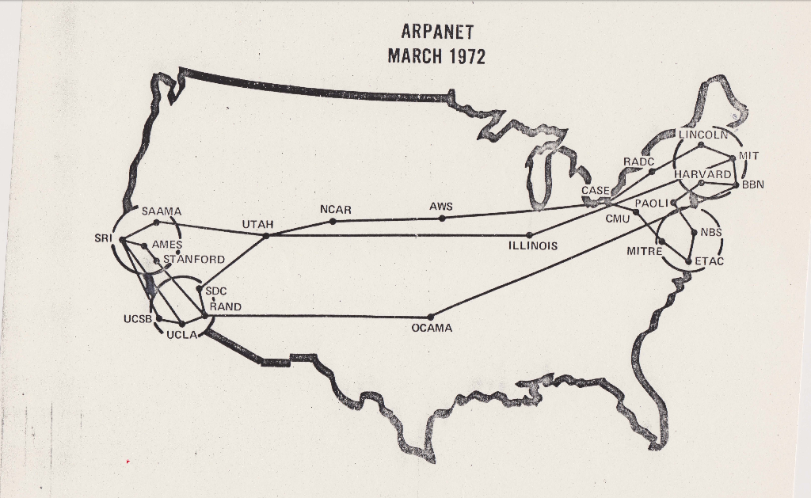 |
La historia de las redes de computadoras comenzó a finales de la década de 1950 con fines militares, evolucionando desde la transmisión telefónica hasta la creación de ARPANET en 1969, la primera red de conmutación de paquetes. El desarrollo clave del protocolo TCP/IP en los años 80 estandarizó las comunicaciones, dando paso a la creación de la World Wide Web en 1989 y a la actual Internet global. |
|
Una red de computadoras es un conjunto de dispositivos (computadoras, servidores, teléfonos, periféricos) interconectados entre sí, ya sea por cables o de forma inalámbrica, que comparten recursos, intercambian datos y permiten la comunicación. Su objetivo principal es optimizar el flujo de información y facilitar el trabajo colaborativo. |
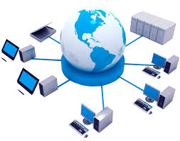 |
PANConecta dispositivos cercanos a una sola persona (aprox. 1 a 10 metros), como un teléfono a unos auriculares Bluetooth o un portátil a un ratón inalámbrico. | |
LANConecta equipos dentro de una área pequeña como un hogar, oficina o edificio. Se usa para compartir impresoras, archivos y conexión a internet Wi-Fi. | 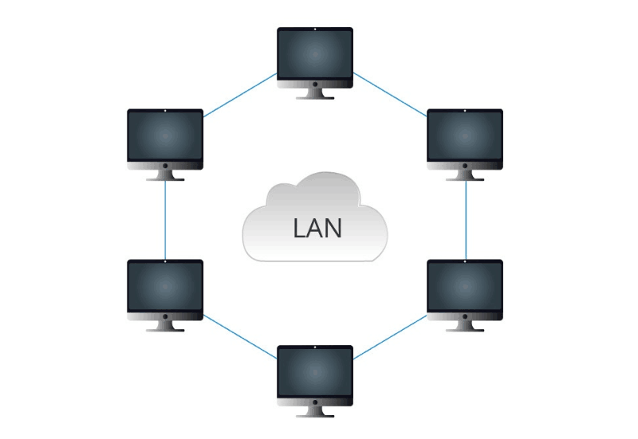 |
MANAbarca un área geográfica mediana, como una ciudad o un campus universitario. Conecta varias LANs entre sí para ofrecer alta velocidad, por ejemplo, en redes municipales o de empresas con sedes cercanas. | 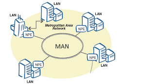 |
WANConecta redes LAN y MAN a través de grandes distancias geográficas (países o continentes). Internet es la WAN más grande. | 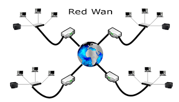 |
| BUS | Todos los dispositivos se conectan a un único cable central o troncal (backbone). Es sencilla, pero si el cable central falla, toda la red se cae. |
| P2P | Conecta dos nodos directamente, facilitando una transmisión rápida y eficiente entre ellos. |
| ESTRELLA | Todos los nodos se conectan a un dispositivo central (switch o hub), facilitando la gestión y administración de la red. Si falla un cable, solo ese nodo se desconecta. |
| ANILLO | Los nodos se conectan en círculo, donde cada dispositivo tiene un par de vecinos, transmitiendo la información en una sola dirección. |
| MALLA | Los nodos están interconectados entre sí, lo que ofrece alta redundancia y confiabilidad. Si una ruta falla, los datos toman otra. |
| ARBOL | Los nodos están colocados en forma de árbol, similar a una combinación de varias estrellas. Ideal para redes jerárquicas. |
| MIXTA | Combina dos o más topologías diferentes en una misma infraestructura. |
| Conexion Guiada | |
|---|---|
| Fibra Óptica | Transmite pulsos de luz, siendo el medio más rápido y de mayor capacidad, ideal para largas distancias. |
| Cable de Par Trenzado (UTP/STP) | Es el estándar común en redes LAN y conexión de ordenadores al router. |
| Cable Coaxial | Utilizado principalmente en televisión por cable y antenas. |
| Conexion No Guiada | |
| Wi-Fi | Conexión inalámbrica para redes locales (WLAN), proporcionando libertad de movimiento. |
| Bluetooth | Tecnología de corto alcance para periféricos y dispositivos personales (PAN). Redes Móviles (4G/5G): Acceso a internet rápido mediante tecnología celular. |
| Satélite | Conexión para áreas extensas o remotas, útil para reducir la congestión terrestre. |
| Infrarojos | Transmiten datos a corta distancia mediante luz infrarroja, requiriendo visión directa, común en mandos a distancia. |
| Microondas | Utilizan antenas parabólicas en línea de vista para conectar dos puntos fijos, útiles para telefonía y transmisión de datos a larga distancia. |
Router (Enrutador):Conecta redes diferentes, determina la mejor ruta para enviar paquetes de datos y funciona en la capa de red. |
|
Switch (Conmutador):Interconecta equipos dentro de una misma red local (LAN), dirigiendo datos eficientemente a través de direcciones MAC. |
|
Bridge (Puente):Conecta segmentos de red, dividiendo redes grandes en otras más pequeñas y reduciendo el tráfico. | |
Hub (Concentrador):Dispositivo básico que repite la señal recibida en un puerto a todos los demás, utilizado para conectar múltiples equipos, aunque es menos eficiente que un switch. | |
Repetidor:Amplifica o regenera la señal física para extender la distancia de la red sin pérdida de calidad. | |
Gateway (Pasarela):Permite la conexión entre redes con protocolos y arquitecturas totalmente diferentes, actuando en todos los niveles del modelo OSI. | |
Módem:Convierte señales digitales de un equipo en analógicas (y viceversa) para la transmisión a través de líneas telefónicas u otros medios. | |
Punto de Acceso (Access Point):Permite la conexión de dispositivos inalámbricos a una red cableada. |
|
Es un marco conceptual de 7 capas, creado por la ISO en 1984, que estandariza las funciones de comunicación de red. Permite que sistemas heterogéneos se conecten y comuniquen, dividiendo el proceso en niveles (desde lo físico a la aplicación) para facilitar la interoperabilidad.
Capa Física (1):Transmisión de datos brutos a través de medios físicos (cables, señales eléctricas/luz). |
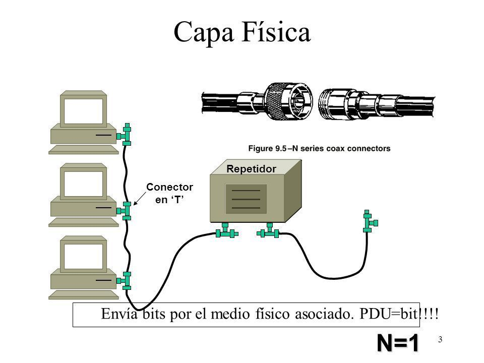 |
Capa de Enlace de Datos (2):Transfiere datos entre nodos de red adyacentes y gestiona la detección de errores. |
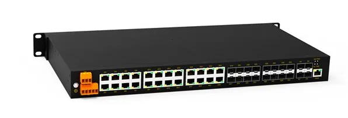 |
Capa de Red (3):Determina la ruta física de los datos (enrutamiento) y direccionamiento lógico (IP). |
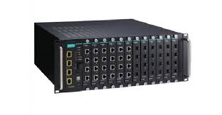 |
Capa de Transporte (4):Gestiona la transferencia de datos (TCP/UDP), control de flujo y corrección de errores. |
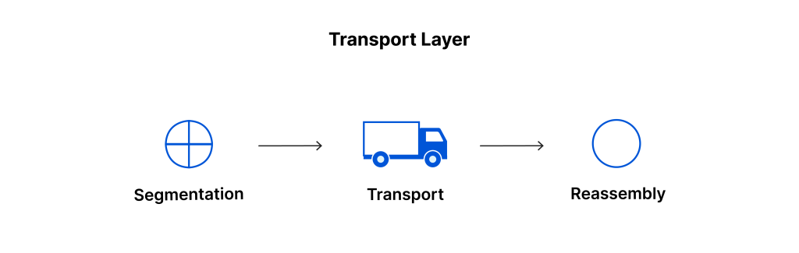 |
Capa de Sesión (5):Establece, gestiona y finaliza las conexiones entre dispositivos. |
|
Capa de Presentación (6):Traduce, cifra y comprime los datos para que sean interpretables por la red. |
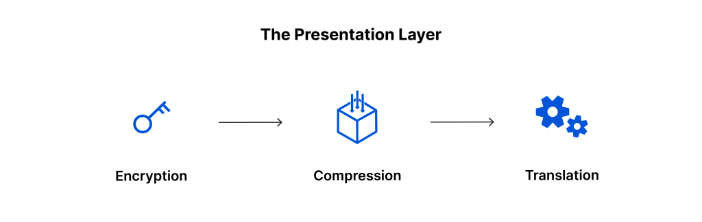 |
Capa de Aplicación (7):Interfaz directa con las aplicaciones de software (navegadores, correos). |
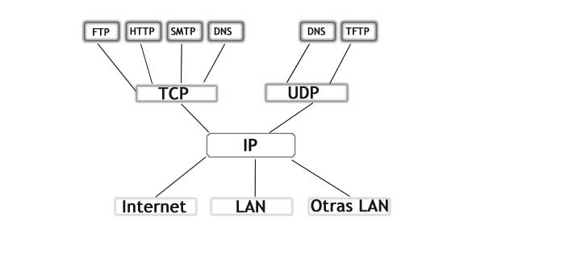 |
Un cliente (navegador, app) solicita datos y el servidor (base de datos, servidor web) los procesa y responde.
Fácil administración, seguridad centralizada, respaldo de datos consistente.
Si el servidor cae, los servicios se detienen; dependencia de la capacidad del servidor.
Navegar en una web, correo electrónico (Gmail), acceso a bases de datos corporativas.
Todos los nodos de la red (pares/peers) tienen los mismos privilegios y capacidades. Un cliente puede descargar archivos de otro y viceversa.
Mayor resiliencia (no depende de un servidor central), escalabilidad (a más usuarios, más recursos), menor costo de infraestructura.
Gestión de seguridad compleja, menor control sobre los datos, rendimiento variable.
Redes BitTorrent, Blockchain (Bitcoin), aplicaciones de chat directo.